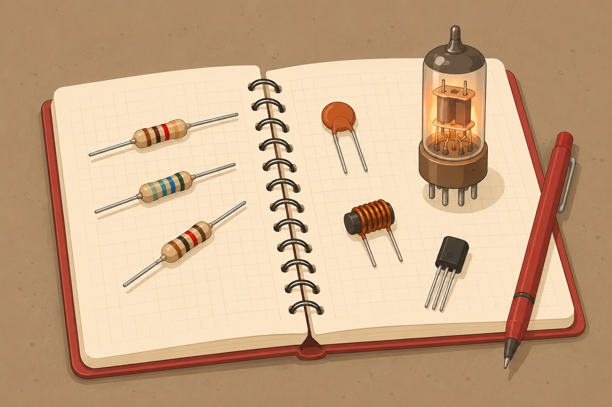

A Practice Notebook
Basic Electronics
Resistors, capacitors, inductors, diodes, tubes, transistors — and how they add up to a working radio.
Told by The Clear Mentor — example first, gotchas called out

A warm, flat-vector editorial illustration of an electronics workbench notebook: a spiral-bound practice notebook lies open, and arranged around/on it are a few axial resistors with visible color bands, a ceramic disc capacitor, a small wound inductor coil, a glowing vacuum tube (triode), and a modern transistor — all rendered in a warm cream/red-pen palette matching a binder theme (cream paper, red accent ink, taupe desk). Flat vector style, soft studio light, generous whitespace, no text baked in. Target size ~1200x800px, 3:2 landscape; compose for a small on-page figure with the subject centred and safe margins — it is letterboxed into a 3:2 box, so keep nothing important near the edges.
Generate this with your image agent, then drop the file here.
Table of Contents
Eight pages, cathode to speaker
- Voltage, Current & the Simple CircuitOhm's law
- Resistorscolor code, series/parallel
- Capacitorscharge, RC time constant
- InductorsFaraday's law, LC resonance
- The Diodethe one-way valve
- The Triodethe first amplifier
- Transistorsswitches & amplifiers
- How a Radio Worksit all comes together
Every page has a live 2D circuit animation you can play with — drag a slider, flip a bias, and watch the current respond. Jump to the Cheatsheet →